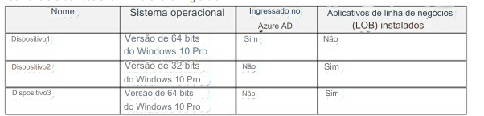

50- PONTO DE ACESSO -
Você tem uma assinatura do Microsoft 365 que usa o Microsoft Intune Suite.
Você usa o Microsoft Intune para gerenciar dispositivos.
Os dispositivos Windows ingressados no Azure AD são registrados automaticamente no Intune.
Você tem os dispositivos mostrados na tabela a seguir.

Você está se preparando para atualizar os dispositivos para o Windows 11.
Todos os dispositivos são compatíveis com o Windows
11.
Você precisa avaliar o Windows Autopilot e a atualização local como métodos de implantação para implementar
o Windows 11 Pro nos dispositivos, mantendo todas as configurações e aplicativos do usuário .
Quais dispositivos podem ser atualizados usando cada método?
Para responder, selecione as opções apropriadas na área
de resposta.
NOTA: Cada seleção correta vale um ponto.